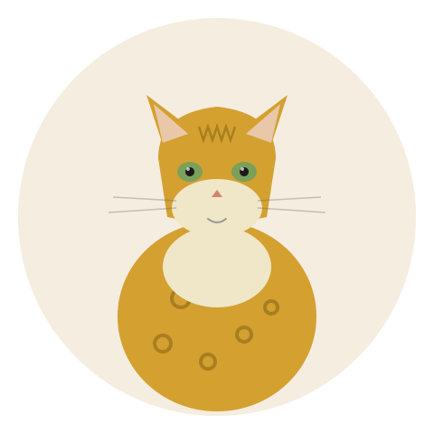

A cat that looks like a leopard and acts like a Border Collie. Buckle up. | 2026-07-01 MeltPet 6 min read
Last updated: 2026-07-01

A house cat wearing a leopard's paint job — with the energy to match.
I Petsat a Bengal for a Weekend. I Underestimated Every Single Thing.
A colleague went out of town two years ago and asked me to watch her Bengal, Saffron. "She's energetic," my colleague said. "You'll have fun." I've been around cats my whole life. I figured I knew what "energetic" meant for a cat. Zoomies at 3am. Chasing a toy mouse. Knocking a pen off the desk.
Saffron climbed my bookshelf in the first 20 minutes. Not jumped —climbed. Vertical ascent, paws on the shelf edges, like a rock climber on a 5.10 route. By Saturday afternoon she'd figured out how to operate the lever-style door handle on my bathroom. Saturday evening she opened the cabinet under the kitchen sink, pulled out a sponge, and eviscerated it on the living room rug. Sunday morning I found her on top of the refrigerator, staring down at me with an expression that said this is my house now.
I returned Saffron to her owner on Sunday evening and said: "She's incredible. Never leave her with me again."
Bengals are not normal cats. They're the most athletic, most intelligent, and most demanding domestic cat breed in existence. The coat —that glittering, spotted, wild-looking pelt —is what sells the breed. The personality is what returns it to the breeder six months later.
The Coat: The Thing Everyone Wants, But Shouldn't Be the Reason
The Bengal coat is genuinely stunning. Short, dense, and soft, with large spots or rosettes —not the small broken stripes of a tabby, but the kind of markings you see on a leopard or an ocelot. Some Bengals have a "glitter" gene that makes individual hairs translucent, so the coat literally sparkles in sunlight. This is what stops people at cat shows. This is what gets 70,000 Instagram followers. This is also the worst reason to buy a Bengal.
The coat is easy to care for —short, minimal shedding, almost no matting. A quick weekly brush is more than enough. But the coat is the wrapping paper. The gift inside is a cat that needs hours of engagement every day, will destroy your house if bored, and is probably smarter than your toddler.
The Brain: Your Bengal Is Smarter Than You Think. And It's Not Close.
Bengals don't just need exercise. They need problems to solve. A feather wand for 10 minutes is not going to cut it. This is a cat that needs puzzle feeders at mealtime —not as enrichment, but as baseline. A bowl of kibble sitting there for free is wasted opportunity. A Bengal wants to work for its food. If you don't give it work, it will invent work. Opening cabinets. Turning on faucets. Flushing toilets for entertainment. Retrieving items from drawers and hiding them under the couch.
They can learn tricks —sit, stay, come, high-five, fetch —with the same reliability as a well-trained dog. Clicker training works particularly well. Many Bengal owners teach harness walking because the breed needs more territory than a house can provide. A Bengal on a leash is not weird. It's a reasonable accommodation for a cat with the energy of a Jack Russell Terrier and the vertical leap of an NBA forward.
If you can't commit to interactive play twice a day, puzzle feeders at every meal, and a home environment with cat trees, wall shelves, and window perches at multiple heights —do not get a Bengal. A bored Bengal doesn't nap. A bored Bengal dismantles your house.
The Real Monthly Cost of a Bengal
Category
Monthly Estimate
Notes
High-quality wet + dry food
$40–80
High-protein diet —Bengals are muscular and active
Litter
$15–25
Unscented clumping; some Bengals are picky about box cleanliness
Pet insurance
$25–45
HCM and other genetic risks make insurance a good idea
Routine vet (annual 12)
$15–25
Annual checkup, vaccines, bloodwork
Enrichment (toys, puzzles, replacements)
$20–40
Puzzle feeders, wand toys, cat trees —they go through stuff fast
Monthly total
$115–215
Before emergencies or major purchases
One-time startup costs: cat trees rated for active climbing ($80–200), wall-mounted shelves and perches ($100–300 if you install a system), a catio or window enclosure ($100–400), heavy-duty puzzle feeders ($25–60 each), a harness and leash for walks ($30–50). Figure $400–1,000 upfront before you even bring the cat home. A Bengal in a bare apartment with one scratching post and a jingle ball is a Bengal that will redecorate your apartment with its teeth.
Health: What Screens for and What to Watch
HCM. Same story as Maine Coons and Ragdolls —hypertrophic cardiomyopathy is a genetic risk in the breed, and a DNA test alone isn't sufficient. A breeder should do annual cardiac ultrasounds on breeding cats and show you the reports. This is non-negotiable.
PK deficiency. Pyruvate kinase deficiency is a genetic condition that causes anemia. It's recessive —both parents must carry the gene for a kitten to be affected. A DNA test exists. Both parents should be tested. If the breeder doesn't know what PK deficiency is, find a different breeder.
Progressive retinal atrophy (PRA-b). A degenerative eye disease that leads to blindness. Also recessive, also DNA-testable. Test both parents. If they're both negative, the kittens can't be affected. If the breeder doesn't have the test results, assume the worst.
Patellar luxation. Kneecaps that slip out of place. More common in Bengals than in many breeds. A breeder who screens for it will have orthopedic exam results. It's not a DNA test —it's a physical exam —so it requires a vet who knows what to look for.
A Bengal from fully screened parents runs $1,500–3,000 for a pet-quality kitten. One from unscreened parents runs $600–1,000 plus whatever the undetected condition costs later. The math is not complicated.
Who Should Actually Get a Bengal
Get a Bengal if you want a cat that's more like an active dog —one you can train, walk on a leash, and interact with constantly. If you work from home and want a companion that's genuinely engaged with what you're doing. If you enjoy building cat environments —shelves, catios, climbing walls —as a hobby.
Do not get a Bengal if you want a quiet, low-maintenance pet. If you're gone 9+ hours a day. If you have fragile dcor or a low tolerance for things being knocked off surfaces. If the purchase price is already stretching your budget —because the ongoing enrichment and potential vet costs will break it.
The breed's surrender rate is high for a reason. Beautiful does not mean easy. A Bengal is a 15-year commitment to a cat that will treat your house like an obstacle course and your schedule like a suggestion. If those 15 years sound like a challenge you want, a Bengal might be the best cat you ever own. If they sound like a lot of work, they are —and there are 40 other breeds that will fit your life better.
📚 Sources
Peer-reviewed research and breed registry health data.
Meurs, K.M., et al. (2005).A substitution mutation in the myosin binding protein C gene in Bengal cats. Journal of Veterinary Internal Medicine.
Lyons, L.A., et al. (2006).Pyruvate kinase deficiency in Bengal cats. Animal Genetics.
TICA (The International Cat Association).Bengal Breed Standard & Health Screening Guidelines. tica.org
Rah, H., et al. (2011).Early-onset progressive retinal atrophy in Bengal cats. Veterinary Ophthalmology.
Pet Insurance Claims Data (2023–2025).Bengal health trends. Nationwide & Trupanion aggregated.